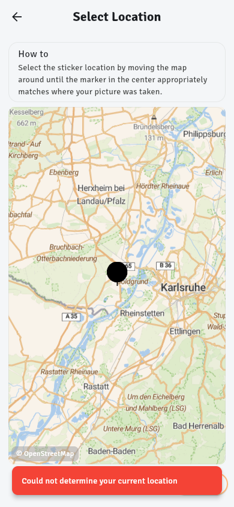
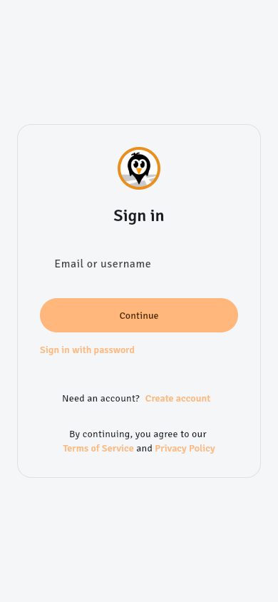
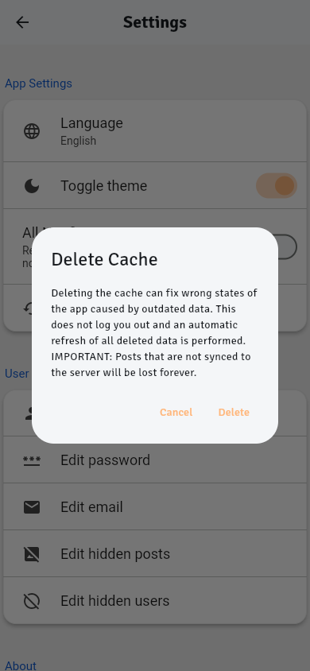
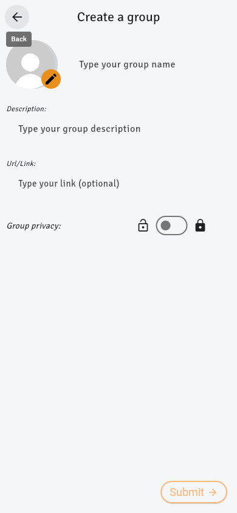
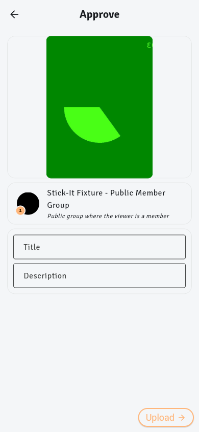
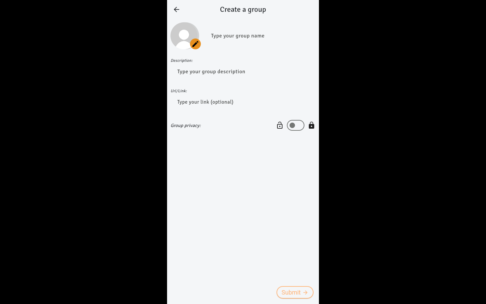
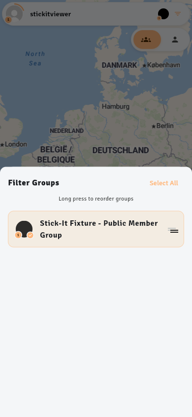
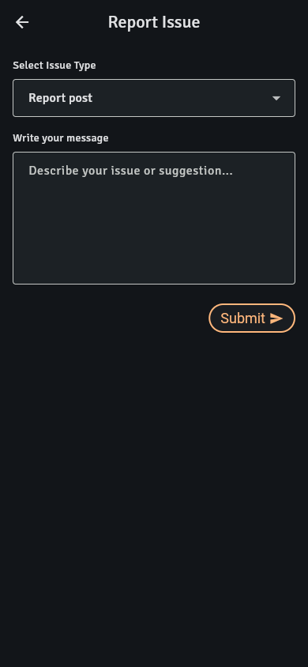
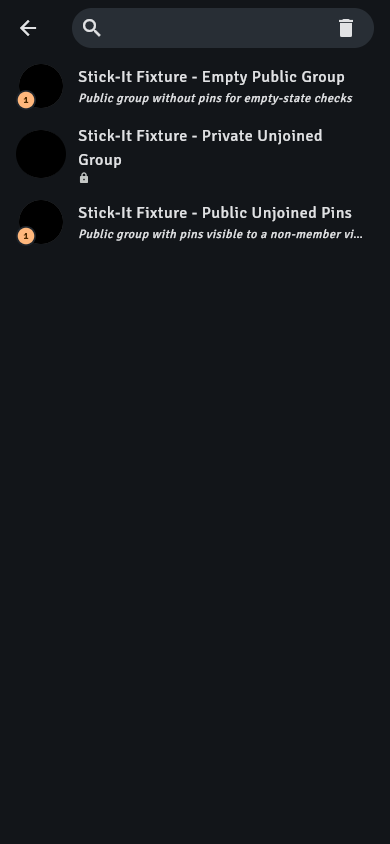

High — overlap01. Group avatar intrudes into the tab strip
Where: Groups → open the joined public group. Reproduced at 390×844 and 1440×900, in light and dark themes.
The 80px avatar extends down into the Members icon row. The header looks assembled from overlapping pieces. The tabs also appear before the Members/Sticks/Description summary, separating each tab from its actual content.
Possible fix: Give avatar/summary and tabs separate layout rows. Put the avatar beside compact member/pin counts, then description, then a pinned tab bar. Derive expanded height from that content rather than overlapping a fixed background and bottom slot.
High — clipping02. Feed metadata runs past the right edge
Where: Feed → resize to 320×740 with the seeded joined group.
The group name, separators, and age stay on a single line that is wider than the card. The age reaches the viewport edge and is clipped rather than aligning with the photo’s right gutter. The long group name is legitimate fixture content, not an artificially enormous string.
Possible fix: Let the group name take the remaining space with ellipsis, preserve a fixed trailing date, or wrap metadata into two lines. Keep the whole row inside the photo’s horizontal padding. Verify at 320px with long names.
High — overlay03. Location-error toast covers the Next action
Where: Camera → Take photo → location fallback → Select Location, while the location failure message is visible.
The red error toast sits directly over the bottom-right Next button. Only part of the button outline is visible, precisely when the user needs to continue by choosing a location manually. This was observed during an actual local browser location failure; no screenshot was mocked.
Possible fix: Use an inline location-status banner above the map, or a Scaffold-managed snackbar with an inset that clears a shared bottom action bar. A recoverable error must not obscure the recovery action.

Select Location: red error message obscures Next
High — legibility04. Light-theme active controls look faded
Where: Sign in, navigation tabs, group tabs, form actions, filter sheet, and Delete Cache confirmation.
Active links and selected labels are pale orange on an almost-white surface. They can look less prominent than inactive gray controls. Feed metadata is similarly faint. In the light feed header, the overflow-menu dots are dark against a dark gray overlay, unlike the white author name.
Possible fix: Use a darker orange for light-theme text/icons and reserve the peach for filled backgrounds with dark text. Use onSurfaceVariant for secondary metadata. Give photo headers a consistent scrim and explicitly contrasting menu icons. Check final foreground/background pairs against the 4.5:1 normal-text target.

Faint secondary sign-in links
Faint metadata and dark overflow dots

Low-emphasis Cancel/Delete actions
Medium — affordance05. Several form fields look like loose text
Where: Sign in; Groups → + → Create a new group, before focusing any field.
The email/username field has almost no visible container. Group name, description, and URL likewise look like labels placed in empty space. This differs sharply from the clear outlined fields in photo review and profile editing.
Possible fix: Choose one field treatment across the app: visible surface fill and/or a subtle resting outline, persistent labels, and a distinct focus border. Preserve clean spacing without relying on placeholder-like text to communicate that an area is editable.
Sign-in field is visually difficult to distinguish

Group form resembles loose text

Photo review already uses clearer outlined fields
Medium — consistency06. Settings looks like a different application
Where: Profile → Settings, then Edit profile, in both themes.
Settings switches from the app’s Signika typography and orange styling to a platform-style list with a different font, bright blue section headings in light mode, white raised cards, and different spacing. Entering Edit profile switches the visual language back again.
Possible fix: Apply the same text styles and color tokens to SettingsList, or build the settings sections from the app’s standard ListTiles. Keep section heading weight, card treatment, and side gutters consistent with adjacent screens.
Medium — desktop layout07. Desktop is a narrow phone strip on a black canvas
Where: Resize any signed-in screen to 1440×900; observed on group details, profile, and group creation.
The entire app remains 450px wide with almost 500px of black space on each side. Light mode has especially harsh framing. Maps, lists, and forms cannot use the available space; this looks like an embedded phone preview rather than a desktop web app.
Possible fix: At minimum use a theme-matched outer surface and a deliberate centered app frame. Prefer responsive layouts: bounded reading/form columns, wider map/list views, and a navigation rail above a desktop breakpoint. A phone-width layout can remain an intentional small-screen mode.
1440px group screen retains a 450px application column

Same black framing around a light form
Medium — overlay coordination08. Expanding rankings buries map controls
Where: Map → drag the ranking sheet upward using a touch gesture. Reproduced at 390×844.
The expanded sheet covers the recenter control and map attribution. The visible map remains at the top, but its recenter action stays below the sheet. The collapsed state has the controls immediately above the sheet, so expansion breaks their spatial relationship.
Possible fix: Track the live sheet extent and anchor recenter and attribution above it, with a small consistent gap. If expanded rankings intentionally replace map interaction, make that a clear mode and provide an obvious collapse action. Keep required map attribution visible.
Medium — theme mismatch09. Dark mode leaves the map glaringly light
Where: Enable dark theme in Settings → return to Map.
The header, switches, navigation, and ranking sheet turn very dark while the map remains bright cream and blue. The largest surface does not participate in dark mode, producing a stark split across the screen.
Possible fix: Offer a dark cartographic style and select it with the app theme, or expose an explicit map-style setting. Prefer properly styled tiles over blanket image inversion, which can damage labels and marker colors.
Bright map against dark app surfaces
Medium — disproportionate sheet10. One group opens a mostly empty half-screen filter
Where: Map or Feed → tap the group-filter avatars with one joined group.
The filter sheet takes 60% of the screen for one row. Most of it is blank; the small header and Select All action are visually stranded at the top. There is no visible close button or drag handle. The one-row filter feels disproportionately heavy.
Possible fix: Use content-sized height with a sensible maximum and scrolling when needed. Add a clear drag handle/close control, and make the whole filter trigger a labeled control such as “Groups · 1 selected.” Avoid showing Select All as the dominant action for a one-item list.

A single row leaves most of the fixed-height sheet empty
Medium — action hierarchy11. Primary form actions look like small secondary buttons
Where: Create group, photo review, Edit profile, and Report Issue.
Create/Upload are narrow orange outline pills, often isolated at the extreme bottom-right with a large empty gap after the form. Other screens place a similar pill immediately after their fields. Login instead uses a prominent filled, full-width action. The app lacks a consistent primary-action pattern.
Possible fix: Use a clear filled primary action with a consistent visible height. For long/task screens, use a padded bottom action bar; for short forms, place it consistently after the fields. Use labels such as “Create group” and “Publish pin.” Keep outlined buttons for secondary actions.
Small Submit button separated from a sparse form
Upload is visually weak and distant from the form

Similar button placed differently in the report form
Lower — search clarity12. Group search opens as an unlabeled empty pill with a trash icon
Where: Groups → + → Search existing groups.
The page has no visible title or search prompt. An empty rounded search bar immediately shows a trash-can control. It gives little guidance about what can be searched, and the destructive-looking icon is an odd choice for clearing text that is not there yet.
Possible fix: Add “Search groups” as a persistent accessible label/visible hint and, if needed, a page heading. Use a conventional clear × only when the query is nonempty. Keep field dimensions aligned with the shared form system.

Empty search field with persistent trash icon and no hint